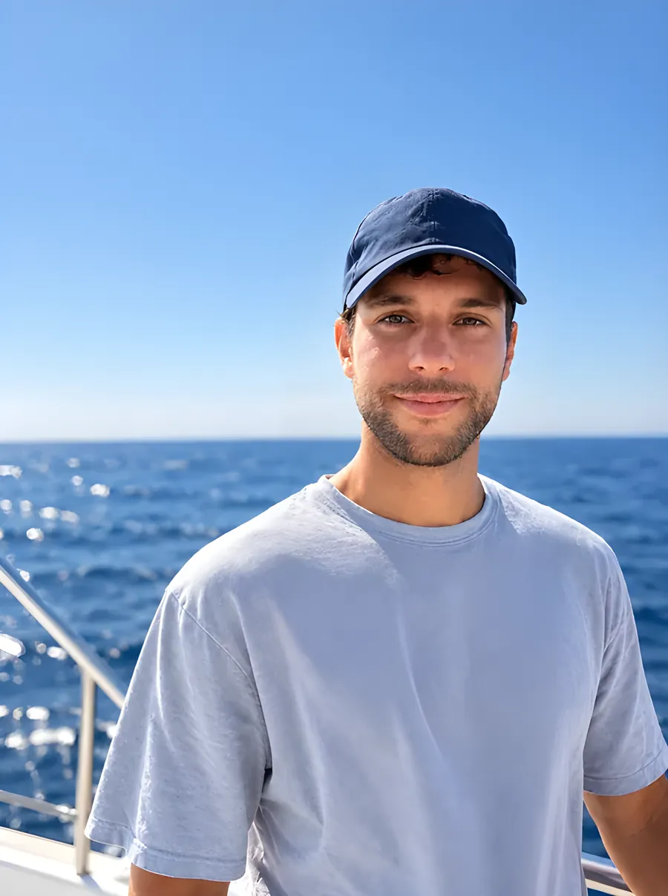

Über uns und Kontakt
Wir antworten täglich. Über WhatsApp auch außerhalb der Zeiten.

Andrea Pani
Gründer und Skipper
Ich bin Andrea, komme aus Sassari und arbeite in den Häfen im Norden Sardiniens. Angefangen habe ich als Crew auf einem Katamaran vor der Asinara, daher kommt die Leidenschaft.
Mit Sail&Clean kümmere ich mich um Reinigung und Pflege von Booten sowie um Überführungen auf dem Seeweg, zusammen mit einigen Mitarbeitern.
Bootsführerschein über 12 Seemeilen
Das ist die in Italien vorgeschriebene Befähigung für Überführungen auf offener See.
Versicherte Leistung
Die Versicherung für die Leistung übernehmen wir, sie ist im Preis enthalten.
Kontakt
Sprachen: Italienisch, Englisch, Französisch, Deutsch, Spanisch
Betreiben Sie eine Marina, eine Werft oder eine Agentur? Wir betreuen Ihre Kunden gern direkt.
Die Karte nutzt Google Maps, das Cookies von Drittanbietern setzt. Sie wird nur mit Ihrer Einwilligung geladen.
In Google Maps öffnen